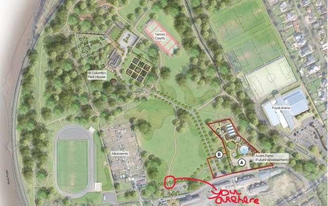

FoyleMusicFest- St.Columbs park, Derry
Day One - Shown Where your staying with live music from Local Bands!
Foyle Music Festival, Born within the heart of the NorthWest. Brand new Festival ready to be set in St.Columbs Park, Coming in Summer 2026 with local bands and legendary acts.

Date: July 2026
Location: St Columbs Park Pitch
Festival Snapshot
- Built for 18 - 25 year olds
- Homegrown Talent
- International talent
- Camping and late night festival vibes